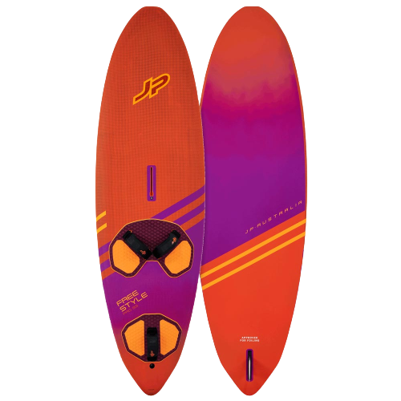
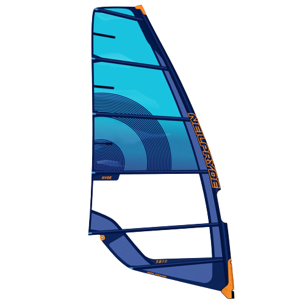

Windsurfing kit consists of several essential components that are necessary for the sport. The main components are the board, sail, mast, and boom. The board is typically made of lightweight materials such as foam or plastic and can vary in size depending on the rider's skill level and wind conditions. The sail is made of durable fabric and is attached to the mast and boom, which are usually made of lightweight materials such as carbon fiber. Other important accessories include a wetsuit, harness, and foot straps. Choosing the right windsurfing kit is important for enjoying the sport and staying safe on the water.
The Basics
The main pieces of equiptment you'll need to windsurf is a board and a sail. Click on the board and sail images below to learn more.

The board is the key player in windsurfing! It's what you stand on, and they vary massively in size and style. If you're a beginner, you'll start on a larger board as they're more bouyant and as you improve you'll progress to smaller boards - these go faster but are more wobbly!

Sails come in a very broad range of sizes to accomodate the different levels of wind. The windier the conditions, the smaller the sail. The sails are made up of a series of plastic, lightweight panels and are held in positions using a mast and horizontal batons.
Boom
The boom is attatched to the sail, and is the part of the kit which a rider holds onto. They come in many shapes and sizes, and depends on the size of the sail required.
Harnesses go around the waist of the rider, and can act as a bouyancy device. Most importantly, the metal hook is used to attatch the rider to the harness lines found on the boom. It allows the power of the sail to be channeled more efficiently through the mast and diverts the effort away from the rider's arms.
The mast foot is small but mighty. It's a device which screws into the board upon which the sail is then clipped in. It keeps the two key pieces of equiptment connected, and without it windsurfing wouldn't be possible!
.png)